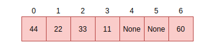

Maps and Dictionaries¶
MicroPython dictionaries and maps use techniques called open addressing and linear probing. This chapter details both of these methods.
Open addressing¶
Open addressing is used to resolve collisions. Collisions are very common occurrences and happen when two items happen to hash to the same slot or location. For example, given a hash setup as this:
If there is a request to fill slot 0 with 70, since the slot 0 is not empty, open addressing
finds the next available slot in the dictionary to service this request. This sequential search for an alternate
location is called probing. There are several sequence probing algorithms but MicroPython uses
linear probing that is described in the next section.
Linear probing¶
Linear probing is one of the methods for finding an available address or slot in a dictionary. In MicroPython,
it is used with open addressing. To service the request described above, unlike other probing algorithms,
linear probing assumes a fixed interval of 1 between probes. The request will therefore be serviced by
placing the item in the next free slot which is slot 4 in our example:
The same methods i.e open addressing and linear probing are used to search for an item in a dictionary.
Assume we want to search for the data item 33. The computed hash value will be 2. Looking at slot 2
reveals 33, at this point, we return True. Searching for 70 is quite different as there was a
collision at the time of insertion. Therefore computing the hash value is 0 which is currently
holding 44. Instead of simply returning False, we perform a sequential search starting at point
1 until the item 70 is found or we encounter a free slot. This is the general way of performing
look-ups in hashes:
// not yet found, keep searching in this table
pos = (pos + 1) % set->alloc;
if (pos == start_pos) {
// search got back to starting position, so index is not in table
if (lookup_kind & MP_MAP_LOOKUP_ADD_IF_NOT_FOUND) {
if (avail_slot != NULL) {
// there was an available slot, so use that
set->used++;
*avail_slot = index;
return index;
} else {
// not enough room in table, rehash it
mp_set_rehash(set);
// restart the search for the new element
start_pos = pos = hash % set->alloc;
}
}
} else {
return MP_OBJ_NULL;
}